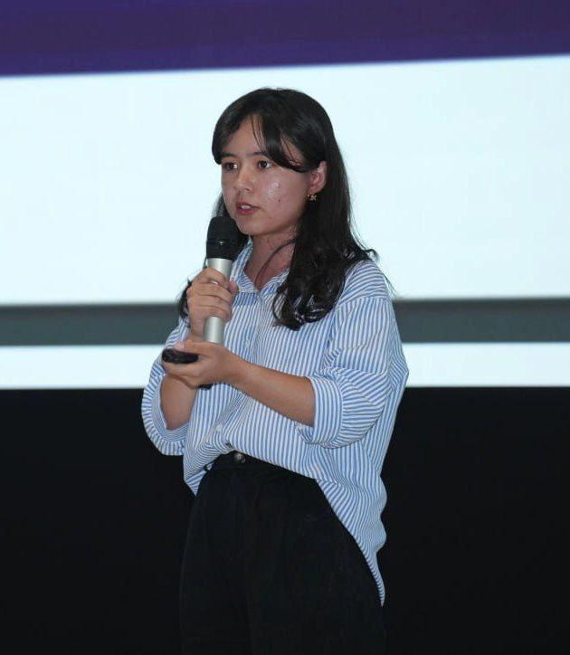

§01
THE OBSESSION
STATUS: ACTIVE
SUBJECT 001 / 2026
SUBJECT 001 / 2026
She learned to code at 14 on her father's phone. Veon hired her at 15.
I grew up in Tashkent writing Python on a cracked Android between classes. By the time I could legally hold a bank card I was shipping Beeline's consumer app to a hundred thousand users. I don't know another way to spend a Saturday. I'd like to meet the people who feel the same.
portrait.jpg
REPLACE · 1600×2000

§02
THE THREE
Three lines a YC partner needs. The rest of the page proves them.
ENTRY S.01
2022
15
Veon hired me at fifteen.
Youngest hire in the operator's history. Co-built two consumer features that reached 100k+ users in the first quarter.
UNREPEATABLE
ENTRY S.02
2024–PRESENT
32+
I run the IT operation behind a college-prep platform reaching thirty-two countries.
Built the IT function from 3 people to 30+ in under two years. Hiring pipeline, sprint cadence, QA infrastructure, salary automation.
OPERATOR
ENTRY S.03
2023–25
5×
Five-time Republican Hackathon winner.
National-level wins across three years of competing — the most decorated track record in my cohort.
NATIONAL
─── full ranking in §04 · ranged S → C ───
§03
THE BUILD
Two products. One thesis. Both built for the people the market forgets.
CASE FILE 01
Kasbing
AI career platform · displaced workers · emerging markets
Kasbing is an AI career platform for workers displaced by automation in emerging markets. A user opens the app, tells it what they used to do and what's changed, and gets matched to local roles that AI can't easily replace — alongside the specific reskilling steps to get there. The whole flow runs in the languages people actually speak: Uzbek, Russian, Kazakh.
The user I built it for is real. In 2023, Tashkent's metro ticket sellers were replaced by automated machines almost overnight. A week later a classmate stopped bringing lunch — her parent had been one of them. Kasbing exists because no one in San Francisco is building career tools for the markets where displacement is already the default.
Live in Uzbekistan, Kazakhstan, and Kyrgyzstan. 50M UZS in non-dilutive funding secured. 1st place at AI Girls Bootcamp (900+ applicants) and Hackunicorn Camp.
The user I built it for is real. In 2023, Tashkent's metro ticket sellers were replaced by automated machines almost overnight. A week later a classmate stopped bringing lunch — her parent had been one of them. Kasbing exists because no one in San Francisco is building career tools for the markets where displacement is already the default.
Live in Uzbekistan, Kazakhstan, and Kyrgyzstan. 50M UZS in non-dilutive funding secured. 1st place at AI Girls Bootcamp (900+ applicants) and Hackunicorn Camp.
3
COUNTRIES LIVE · 50M UZS NON-DILUTIVE · PRIVATE BETA
CASE FILE 02
Yurideks
AI legal access · underserved communities · Central Asia
Yurideks translates a real legal situation into the relevant law, in plain Uzbek or Russian. A user describes what happened to them — a dispute, a contract, a family matter — and gets back the specific statutes that apply, what their actual options are, and when they need an actual lawyer versus when they don't.
The user I built it for is the 80% of people in Central Asia who need legal help and can't afford it. Lawyers are expensive, laws are written in three languages of legalese, and most people end up signing things they don't understand or walking away from claims they'd win. Yurideks is the version of legal access that doesn't require knowing a lawyer in the first place.
Built from a blank page to an award-winning platform. Selected for the Global Youth Conference Italy delegation (3% acceptance). Currently in private beta with users across Uzbekistan; demos available on request.
The user I built it for is the 80% of people in Central Asia who need legal help and can't afford it. Lawyers are expensive, laws are written in three languages of legalese, and most people end up signing things they don't understand or walking away from claims they'd win. Yurideks is the version of legal access that doesn't require knowing a lawyer in the first place.
Built from a blank page to an award-winning platform. Selected for the Global Youth Conference Italy delegation (3% acceptance). Currently in private beta with users across Uzbekistan; demos available on request.
1st
AI GIRLS BOOTCAMP · 900+ APPLICANTS · GYC ITALY (3%)
Live builds — interfaces shipping in private beta. Demos available on request.
§04
THE RECEIPTS
Everything, ranked. Read as far as you need to.
Tier S is what makes the rest worth reading. Tier C is depth, not weight.
TIER S
unrepeatable
3 entries
Already shown on the cover. Repeated here in full context.
ENTRY 012022
Veon / Beeline hire
youngest hire in the operator's history.
Brought on at 15 as the youngest hire in the operator's history. Co-built two consumer features inside the Beeline Uzbekistan app; both reached 100k+ users in the first quarter.
ENTRY 022024–PRESENT
SATashkent · IT operations, built from scratch
3 → 30+ in under two years.
Built the IT function from 3 to 30+ in under two years — hiring pipeline, sprint cadence, QA infrastructure, salary automation. Joined at 18 to set this up from the ground up; platform now serves users in 32+ countries.
ENTRY 032023–25
Republican hackathons
5× national wins.
Five wins across Uzbekistan Republican Hackathons — the most decorated national track record in this cohort, across three years of competing.
TIER A
strong
4 entries
International selection processes with real applicant pools. Each one survives a careful read.
ENTRY 042022
ICT4Girls laureate · Switzerland × Uzbekistan
445 applicants · youngest ever.
Selected from 445 applicants as the youngest laureate in the program's history; a co-initiative of the Swiss and Uzbek governments.
ENTRY 052025
GYC Italy delegate
3% acceptance rate.
Admitted to the Global Young Changemakers cohort in Milan from a pool with a 3% acceptance rate; representing Central Asia.
ENTRY 062025
AI500 finalist
top 3% of 1,345 teams.
Reached the AI500 finalist round — top 3% from 1,345 teams in a high-pressure timed format.
ENTRY 072024–PRESENT
Kasbing · founder
AI career platform · 3 countries · 50M UZS.
Building Kasbing — an AI career platform for workers displaced by automation in emerging markets. 1st place at AI Girls Bootcamp (900+ applicants) and Hackunicorn Camp (100+ startups). 50M UZS in non-dilutive funding secured. Live in three countries.
TIER B
context
4 entries
Range and consistency. These support the picture; they don't make it.
ENTRY 082025
Pitch&Rise Women · Top 10
60+ startups.
Top 10 selection at StartupGarage's Pitch&Rise Women program from a field of 60+ startups.
ENTRY 092025
Yoshlar Ventures Pitch Day
top 30 of 200+.
Pitched to a VC panel at Yoshlar Ventures Pitch Day — selected from 200+ applicants.
ENTRY 102024
Technovation Girls · global stage
40k+ STEM terms · demoed to 400+.
Built an Uzbek-language STEM terminology corpus of 40,000+ terms. Demoed live on the global Technovation stage to an audience of 400+.
ENTRY 112024
IT FEST Kazakhstan
international pitch · 90+ teams.
Represented British Management University as an international pitch presenter alongside 90+ teams in Almaty.
TIER C
signal
3 entries
Background and depth. Anyone who reads this far is already convinced.
ENTRY 122022
Tumaris.Tech Central Asia · Top 20
youngest founder selected from Uzbekistan.
Top 20 selection at Tumaris.Tech Central Asia as the youngest founder chosen from Uzbekistan.
ENTRY 132022
AI4Girls · Turkey × Uzbekistan · Top 20
116 applicants · built an AI educational game.
Top 20 from 116 applicants in the bilateral Turkey × Uzbekistan AI4Girls program; built an AI educational game.
ENTRY 14ACADEMIC
Academic baseline
School Gold Medal · GPA 5.0 · IELTS 7.0 (C1).
Graduated school with the Gold Medal at GPA 5.0/5.0. English at C1 (IELTS 7.0). Currently maintaining standing at British Management University while working full-time.
also: organizing committee, Uzbekistan's first Game & Animation Festival (10,000+ attendees, 2024) · Web Summit Qatar 2026 attendee
§05
WHAT'S NEXT